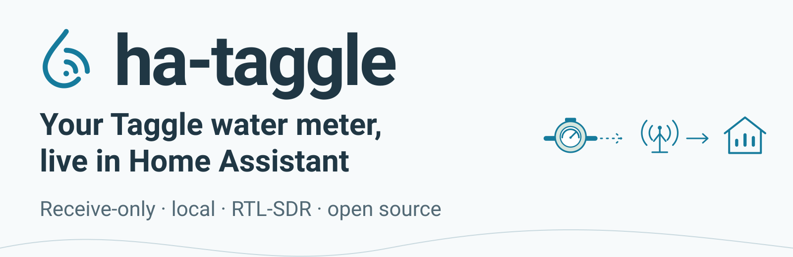
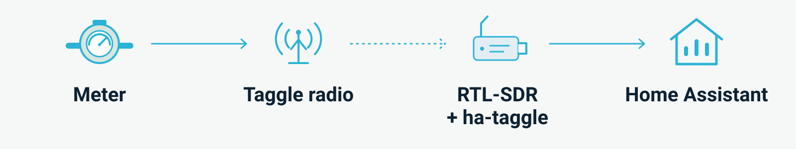
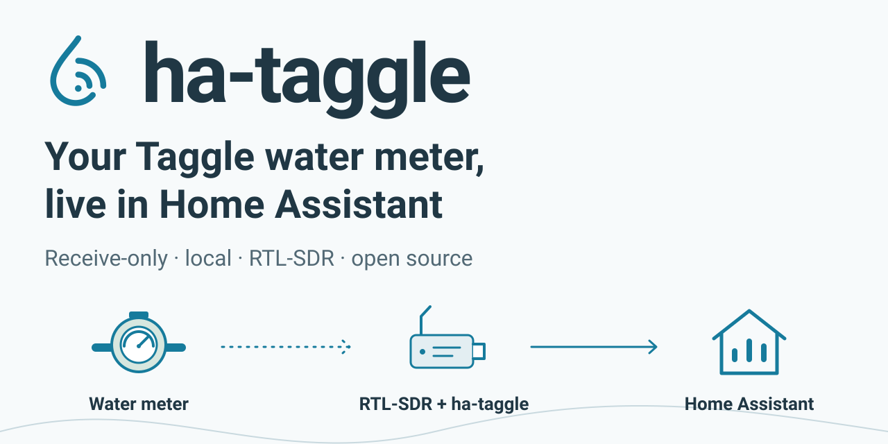
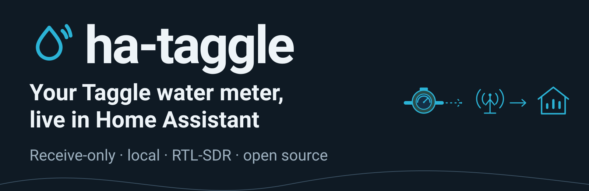
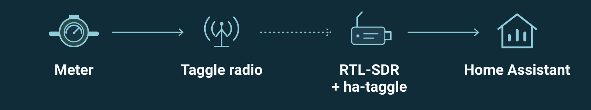

Water becomes signal.
ha-taggle artwork in the existing water blue, slate and pale sage. Original droplet, meter, antenna, receiver and house drawings. SVGs are self-contained; PNGs render at twice their logical size.
Light family · Dark family · Usage & picture markup
Light family
Mark at 32, 64 and 128 px; vector source scales to 256 px and beyond.

hero-light · SVG / 2× PNG
how-it-works-light · SVG / 2× PNGMobile compositions

social-preview · SVG / 2× PNGDark family
Mark at 32, 64 and 128 px; vector source scales to 256 px and beyond.

hero-dark · SVG / 2× PNG
how-it-works-dark · SVG / 2× PNGMobile compositions